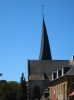
Départ vendredi assez tôt, je fais un peu de tourisme par les petites routes, à travers la région des clochers tors en particulier...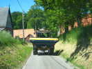
Evidemment, circuler par les petites routes n'offre pas que des avantages !...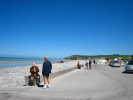
Arrivée à Quiberville, la plage est au bout de cette vallée très ouverte, mais de chaque côté, les falaises, bien sûr...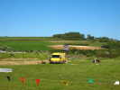
La vallée se termine aux belles collines ondulées, là-bas, qui sont coupées net, à gauche, par la falaise...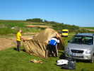
Michel Vanesh plante sa tente toute neuve, refusant tout hébergement pour ce plaisir. Il ne mettra que 3/4 d'heure à en venir à bout, et pas tout seul...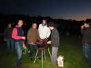
Les gars du Cerf-Volant Club de Dieppe tiennent une réunion qui se prolonge et ils ne mettent les saucisses sur le barbecue qu'à la nuit tombée...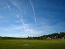
Samedi matin, beau temps... D'innombrables avions passent dans le ciel, laissant leurs traînées blanches au-dessus du point tournant de Dieppe St-Aubin... (précisions : http://www.infos-dieppoises.fr/Archives2009/VieDuCiel.htm ).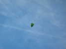
Mais qu'y a-t-il dans ce sac vitellin qui pend au-dessus de notre tête ? Ca ne ressemble à aucun des accessoires cervolistiques habituels...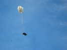
Ah, voilà, c'est François qui a largué un nounours parachutiste de 1 mètre avec ce truc simple : une ficelle à tirer, et le sac s'ouvre !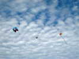
Pas mal de cerfs-volants commencent à monter, malgré un vent capricieux qui change de sens périodiquement ! Au milieu le cerf-volant avec juste un jonc externe mais très stable d'une petite fille...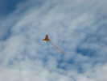
Michel Vanesh fait voler entre autres ce beau papillon...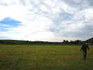
Assez de vent aussi pour une arche de petits Eddies dans le fond du terrain... Enfin, du premier terrain, le champ derrière est aussi disponible et sera utilisé...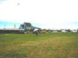
La super-tente de l'organisation a été montée, une tente dépliante en forme d'igloo, complexe et lourde, mais solide... La sono y prend place facilement...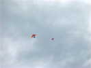
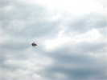
Fabrice Baldan, grand spécialiste du Révo fait aussi voler un combattant...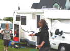
Il utilise la bobine qu'il a confectionnée lui-même, avec des roulements de roller et des baguettes de bambou collées sur un cylindre puis rodées en forme !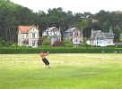
William, de Gwenn Ha Du, se lance dans la Nasa géante dans sa tenue favorite ! Notez les belles maisons de bord de mer derrière !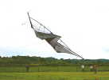
Les spécialistes du pilotable comme K2 s'en donnent à coeur joie et agitent leurs deltas dans toutes les positions... Il y aura des démos de solos, paires et teams...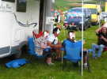
Les cervolistes, une fois leurs cerfs-volants en vol, font une petite pause "p'tit jaune" en fin de matinée, mais se cachent pour ne pas être reconnus !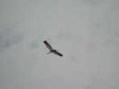
Je fais voler ma grue, mais vous devez en avoir assez de la voir par l'oeil du cervoliste, alors je la montre de 3/4 arrière !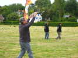
Jean-François Lorente, l'organisateur de Trouville, s'est pris de passion pour la Nasa, et n'arrêtera pas de la journée !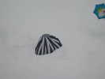
Il a une splendide voile à ses couleurs, Noir et Blanc, quelle surprise ! Il se l'est fait construire sur commande spéciale...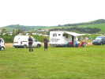
Fabrice et William volent en paire, l'un en Nasa, l'autre en Révo ! Deux quatre-lignes, ça doit être facile !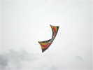
Le Révo de Fabrice pour l'outdoor est un vrai, avec de belles couleurs, même s'il l'a bricolé à sa mode. Ses Révos indoor sont blancs...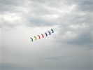
Le team Impossible est venu le samedi, ils présentent leur team classique, ainsi que les spectaculaires trains de Flexis !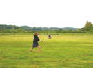
Cette jeune fille, qui vole aussi en paire, a montré une bonne habileté en démonstration solo !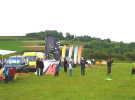
Tout un côté du terrain est maintenant occupé par le caravansérail des cervolistes !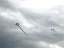
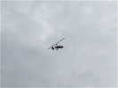
Un autogire, comme ceux vus aux Monts de Blond, est venu faire un tour autour du rassemblement...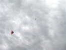
Je vous ai dit que le vent était changeant, regardez cette photo où le cerf-volant de François, en haut, a un cap opposé à celui volant à basse altitude...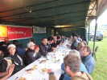
Déjeuner sous la tente, hors d'oeuvre très variés, entrées, poulet, fromage, dessert, tout était très bon et bien préparé, merci !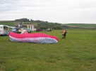
Mais que cherche à faire ce cervoliste doté d'une super-grande voile ? Il ne compte quand même pas décoller comme ça ?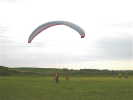
En fait, il a 3 copains qui vont le tirer à travers le champ, comme pour un décollage au treuil...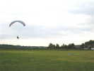
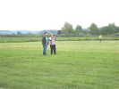
Sous l'égide de Bernard, Patricia Ghesquière se change de son Jardin du V..t en pratiquant devant tout le monde (une première !), la Nasa !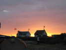
Puis William et Bernard vont voler dans les belles couleurs du coucher de soleil, là-bas, au bord de la mer, avec leurs grandes Nasas (5 m2 ?) !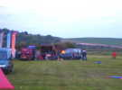
Au soir, les joyeux fêtards du fond nous berceront de leur musique jusqu'à une heure avancée ! Leur voiture ne brûle pas vraiment, c'est juste le barbecue violemment allumé derrière !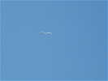
Dimanche matin, vent toujours léger, et majoritairement de terre... Je monte mon Spiralier-Goéland, qui finira quand même par souffrir dans le vent qui forcit...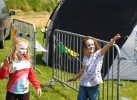
Le public arrive, même une maquilleuse vient enjoliver (?) les petites filles...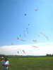
Bernard a mis en l'air deux cerfs-volants, deux lignes, et plein de queues plus ou moins gonflables...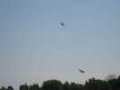
Les démos reprennent de plus belle, comme cette paire de deux-lignes...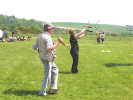
Yves le Pirate a amené une palanquée de Nasas et invite tout le monde à les mettre en l'air (même moi, je progresse doucement...)...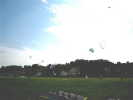
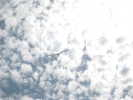
D'ailleurs, j'ai mis Megoel (8 m) en l'air dans ce vent moyen. Et il faut le surveiller constamment, il a un peu tendance à piquer du nez comme le Multi-Flare de François quand le vent faiblit... Mais avec Megoel, on peut rattraper le coup...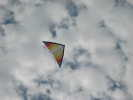
François, lui, a sorti son grand Delta de 6 m, à la vergue en tube métallique ! Il volera aussi bien qu'hier soir où il a suivi avec maestria les changements de direction du vent...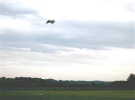
François a aussi mis au piquet dans le champ du fond le flow-form de 5 m de l'Antenne de Beauce qui volera tranquillement toute la journée...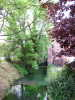
Au retour, je suis les charmantes petites routes derrière Quiberville, en particulier la pittoresque vallée de la Saane. Je m'arrêterai pour la nuit à Val-de-Saane, après avoir parcouru au moins 80 km sans pause !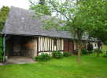
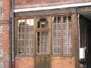
Mais autour de la place et de l'église en brique, les maisons aux façades anciennes ne manquent pas !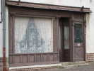
Celle-là, moins travaillée, souffre un peu d'une peinture de protection sombre et empâtée ! Mais l'ensemble reste agréable pour le coup d'oeil général, je ne regretterai pas mon détour... A bientôt !